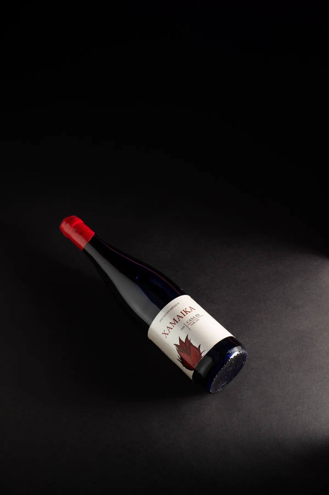
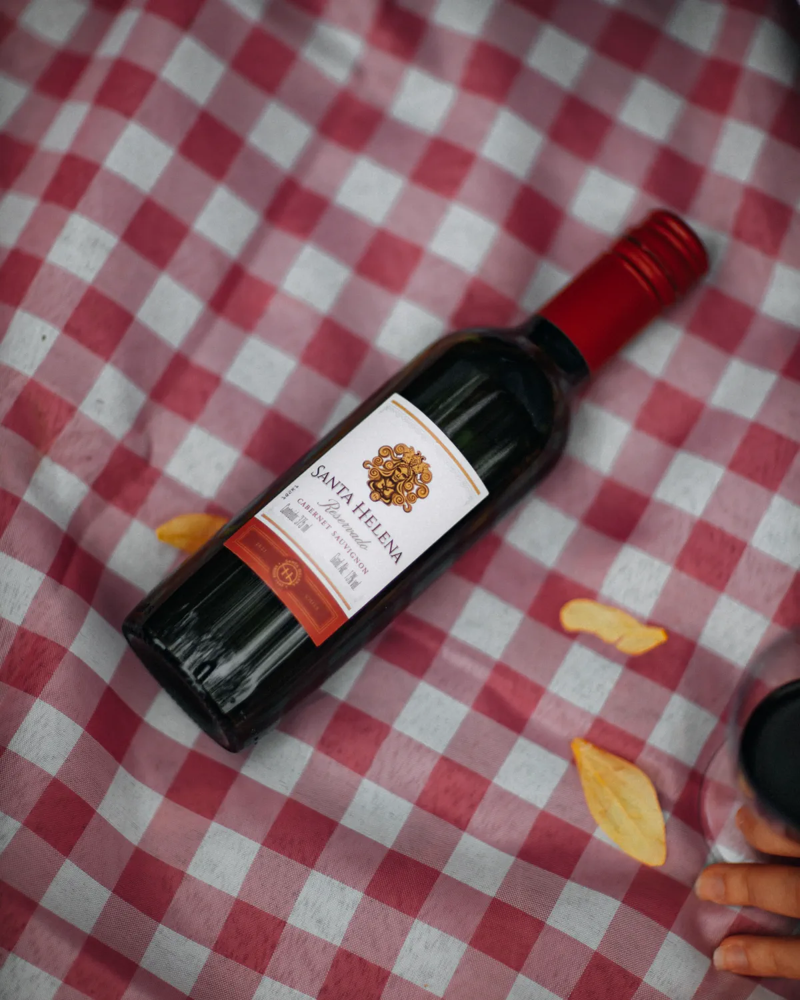
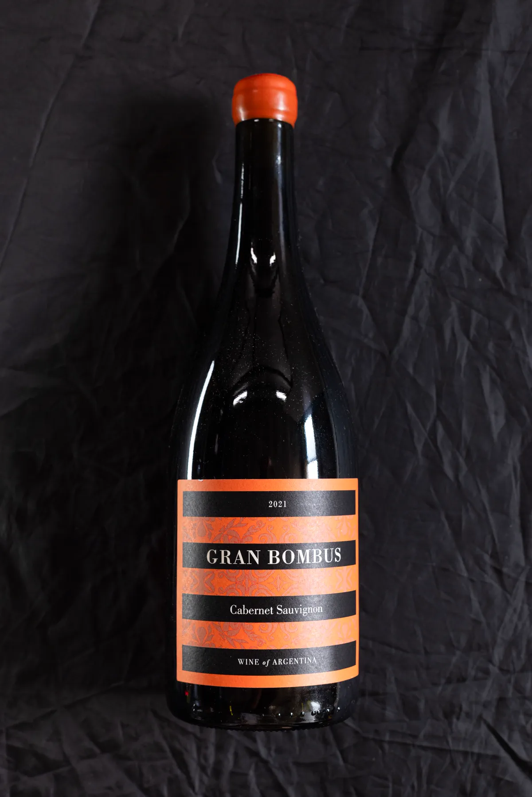
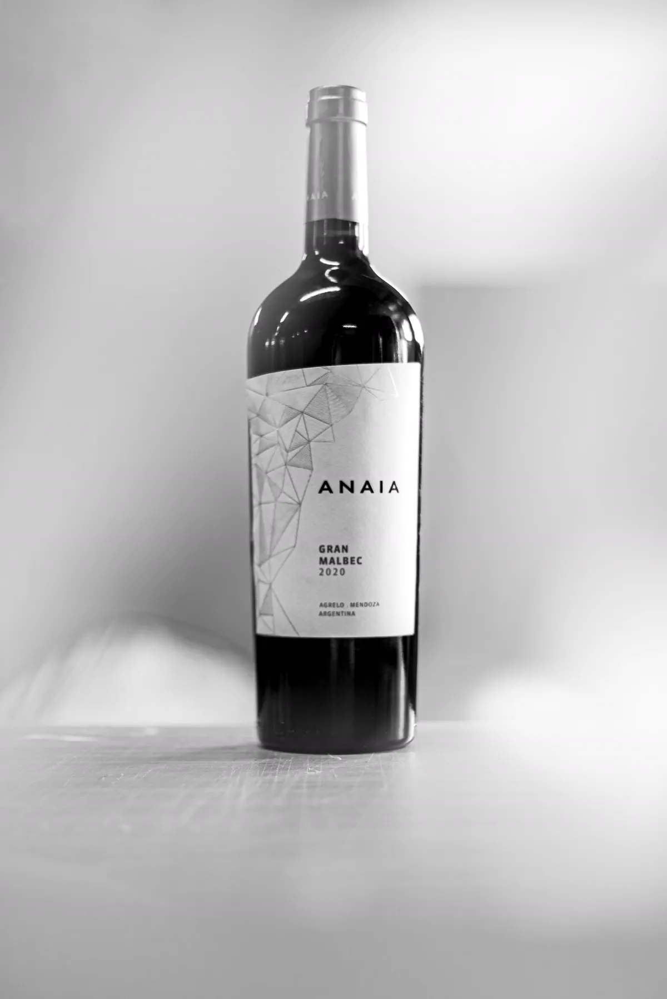
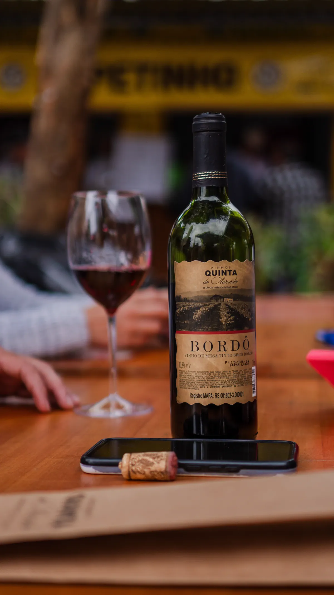
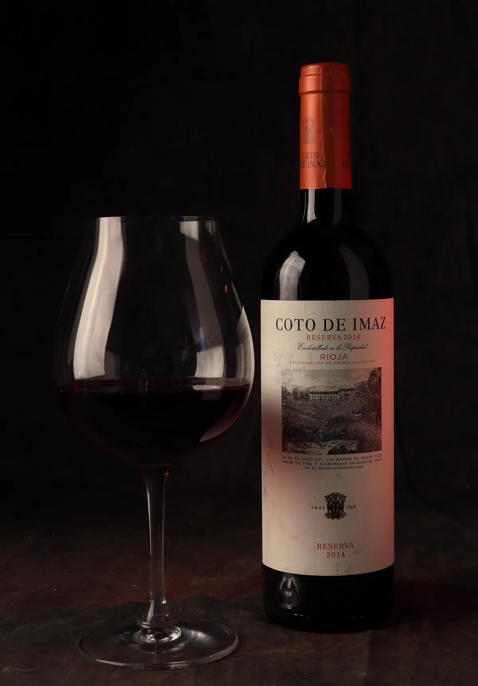

Cava privée · Pessac-Lestonac · MDCCCXCIV
Vignoble Noir
Seis viñedos. Una mesa. Cero prisa.
El encargo
Seis viñedos,
una sola mesa.
La casa nació en 1894 al otro lado de la Gironde, en nueve hectáreas que se compraron porque nadie más las quiso. Hoy se trabaja seis viñedos y no hay intención de trabajar un séptimo.
La regla cabe en una frase: lo que no puedas describir con una sola palabra no se embotella. Nos ha costado media exportación de los Estados Unidos. Nos ha costado también que la mitad de las reseñas que nos escriban hablen del vino y no de la casa.
- Superficie
- 9 ha
- Viñedos
- 6
- Trabajamos
- 2
- Reglas
- 1
La carta
Seis vinos,
seis parcelas.
Cada botella viene de una parcela y de una añada. No hay mezcla que no se pueda defender con el nombre de un suelo.
-

TintoGraves
1994Clavo, grafito, hoja de tabaco. El que se sirve cuando no hay nada que demostrar.
- Uva
- Cabernet Sauvignon
- Parcela
- Graves, 1958
- Alcohol
- 13,0%
9 ha - gravas gruesas - 11 meses en barrica
-

TintoArgile
1998Arcilla pura. Guinda, cacao, un fondo de canela que aparece a los diez minutos.
- Uva
- Merlot
- Parcela
- Argile, 1963
- Alcohol
- 13,5%
9 ha - arcilla roja - 14 meses en barrica
-

TintoGravel profound
2001La parcela que se plantó para no parecerse a las otras. Ciruela negra, pimienta blanca, tanino largo.
- Uva
- Cabernet Franc
- Parcela
- Gravel profound, 1971
- Alcohol
- 12,5%
9 ha - grava a 18 m - barrica de 24 meses
-

TintoFerrugineux
2016Cuarenta por ciento de la mezcla. Estructura de piedra, no de fruta. Es el vino que envejece mejor de la lista.
- Uva
- Petit Verdot
- Parcela
- Ferrugineux, 1968
- Alcohol
- 14,0%
9 ha - suelo ferruginoso - tonneaux de 600 L
-

BlancoBlanc sec
2019Fermentado en barrica, sin maloláctica. Cítrico, tiza, una mineralidad que se nota en el final de la boca.
- Uva
- Sauvignon Blanc
- Parcela
- Blanc sec, 1977
- Alcohol
- 12,0%
9 ha - 11 meses en barrica - fermentación lenta
-

RosadoRosé de table
2021Prensa directa, cuatro horas de contacto. Seco de una manera que en un rosado casi parece un error.
- Uva
- Cabernet Franc
- Parcela
- Rosé de table, 1982
- Alcohol
- 12,0%
9 ha - prensa directa - 4 horas de contacto
Las añadas disponibles cambian con la añada. Escribir a cava@vignoblenoir.example para el estado del día.
La finca
Todo empieza
en el suelo.
Nueve hectáreas al otro lado de la Gironde. La casa no compra uva: sube a las laderas, prueba parcela por parcela y descarta lo que no sepa decir con una sola palabra. De seis viñedos, dos llegaron a embotellarse. Los otros cuatro son suelo.
Vendimia
Cuarenta días
decidiendo.
Del primer corte al último tinte. La vendimia no es una fecha, es una conversación con el día que toca.
Distribución
Seis casas
que pagan antes.
Ninguna de estas seis lleva una botella sin haber subido a la cava. Se visita una vez al año, se prueba lo que sale ese día y se manda lo mismo que se fue.
- Celler & Roth Bremen · Alemania
- Casa Verdial Madrid · España
- Azienda Nord Milano · Italia
- Tanner & Locke Nueva York · Estados Unidos
- Nordvik Vinhandel Oslo · Noruega
- Sala & Ombra São Paulo · Brasil
Vignoble Noir es un proyecto ficticio. Las seis casas, sus nombres y sus distintivos están inventados y no corresponden a ningún importador real.